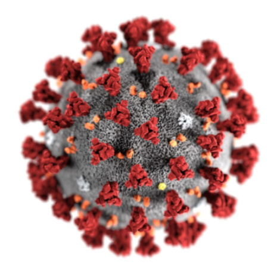
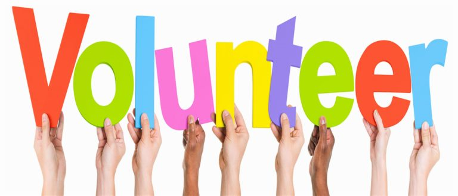

In Janurary of 2020 the World Health Organization (WHO) announces a new virus spreading through Wuhan, China. Over the span of the month the virus made its way to the United States and has taken the lives of 4 and infected more than 200 in China. Over the span of the year countries have shut down, banned travel, everyone has to wor from home, no parties and social distancing and wearing a mask has become the new normal. With over 58.7 million cases worldwide and 1.39 million deaths!! Here are a few ways we can help ourselves and others to getting through these tough times easier
Adopt a pet! So many people around the world have developed anxiety and depression. Adopt a pet to help you combat these illnesses. Not only will you be bettering your life and making a long time bestfriend but you will also be saving the life of an animal who could use your love!
CLICK ON THE PICTURE TO ADOPT YOUR FURRY CHILD!

Or...
Exercise! According to The Mayo Clinic "Physical activity may help bump up the production of your brain's feel-good neurotransmitters, called endorphins." Meaning the more you move the more you just feel good about yourself! Get out there go for a walk, a hike, go fishing So much you can do to get back in touch with nature and with yourself.

So many way you can help your community! Food Drives, Tutoring, Clothing donations and so much more! Just take a look within your community to see what you can do to make a difference. Need help or ideas to get involved? Get Involved Here!